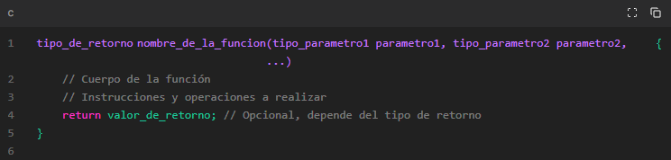

FUNCIONES
Cada función tiene un nombre único y puede recibir parámetros (valores de entrada) y devolver un resultado (valor de salida).
Las funciones en C permiten dividir tareas complejas en porciones más pequeñas y organizadas, lo que facilita el diseño y la legibilidad del código.
En resumen, las funciones en C son bloques de código que realizan tareas específicas. Se definen utilizando una sintaxis que incluye el tipo de retorno, el nombre de la función, los parámetros y el cuerpo de la función. Las funciones permiten dividir tareas complejas en porciones más pequeñas y facilitan la organización y legibilidad del código.
SINTAXYS

tipo_de_retorno indica el tipo de valor que devuelve la función, como entero (int), flotante (float), caracter (char), etc.
nombre_de_la_funcion es el identificador único de la función.
tipo_parametro1, tipo_parametro2, etc., son los tipos de datos de los parámetros que la función puede recibir.
parametro1, parametro2, etc., son los nombres de los parámetros que se utilizan dentro de la función.
valor_de_retorno es el valor que la función devuelve al finalizar su ejecución. Esta parte es opcional si la función no devuelve ningún valor (tipo de retorno void).